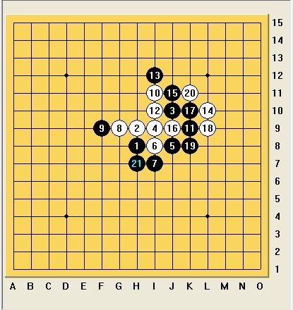

2012全少赛回忆录之四鏖战秦皇岛（二）
#1 2012全少赛回忆录之四鏖战秦皇岛（二） 作者：黄药师 发表时间：2012-8-1 22:20:04
除了周楠，其他孩子都得到了充分的休息，不过这个不是问题，已经习惯了。
第二轮的对阵表一出来，我们教练组立刻行动用相机拍下来，然后把所有学生集中起来进行赛前训话，以后我们每一轮都开始前，已经每一天结束后都会进行这样的集体会议。先看少男组，朱天逸（那威）vs邓伟，朱天逸去年参加过全国赛，成绩不是很理想，之前加过我qq好友，据他自己说，去年心情不好，影响成绩（成长的烦恼），不过小朱同学很礼貌，真的很礼貌，呵呵，实力如何，我不了解，我感觉和邓伟应该是势均力敌的。严杰和刘宇的对手不熟悉，应该说有机会吧，另外少男组的重头戏是胡瑜（那威）vs印周灏（上海），其实是曹冬pk朱建峰，大家懂的，哈哈；
少女组，陆梦溪vs丁雨婷，内战，根据平时的训练来看陆梦溪不出意外应该会胜出，顾玲vs郑逸宁（浙江宁波）本轮的重头戏，顾玲是防守型的，棋风比较稳，郑逸宁是攻击型的，棋风比较飘，我预测是双方五五开吧。陈云敏对一个不认识的，应该可以拿下。
儿甲男组， 陈抱朴vs谢雨辰（茗弈），小谢同学也是下了多年的老队员了，感觉陈抱朴应该顶不住。金子灿（秦皇岛）vs周楠，上一轮金子灿胜了赵黄一（我们的儿童男子甲组三号种子），让我们对这个孩子如临大敌，专门对周楠进行单独指导，尽管如此我的感觉还是周楠胜算更大。李子珩 vs朱迪 （浙江宁波），小李子自己有了打算，决定就按照他想的进行，问题不大。李佳辉 vs蔡吉吉（浙江宁波），哎和浙江卯上了，拼吧，可李佳辉的状态，这孩子还是偏软一些。康海宁（石家庄）vs赵黄一 ，赵黄一此时肯定很抓狂，第一轮输了第二轮按理会碰一个稍微弱的，结果碰到去年第四的康海宁，这对赵黄一是个考验，再输就没有什么机会了。
儿甲女组， 赵悦 vs胡嘉瑶，内战，好吧，大瑶第2盘内战。这组其他孩子的对手都不是很熟悉，但感觉应该能保证不输。
儿乙男，看看对手没有一个熟悉，也没有办法特别准备，常规性的叮嘱了一下。
儿乙女，王姚瑶 vs白若楠（石家庄），对手是参加过去年全国赛的老队员，这是考验小瑶的时候了，到底她的水平在这个组能排到什么水平。顾婉秋vs张清园（清华幼儿园），对上了张进宇老师的千金，年龄上小顾同学占据绝对优势，但考虑到对方的老爸，心中还是有点没底。刘熠蕊 vs朱金燕 ，内战，不多说了。
比赛开始后，按照惯例，作为教练，我们几个人在里面到处溜达，重点关注几桌。我首先看金子灿（秦皇岛）vs周楠，对方开了云月，我头皮发麻，有阴谋？周楠理所当然的交换，白4最常见，然后对方留了一打，然后白六弱防，然后黑棋直接vct，不出20步结束战斗了。哎，赵黄一同学知道以后估计要痛哭一场了。不过现在回头想想，赵黄一第一盘输，并非实力不如对方，而是缺乏比赛经验，过于紧张，以至于无法正常发挥水平。康海宁（石家庄）vs赵黄一依然是瑞星，现在还在走定式，估计要杀到中盘。顾玲vs郑逸宁（浙江宁波），疏星，没有悬念，肯定要拼中盘。邓伟那一桌，朱天逸似乎开了流星，这个邓伟有点懵，纠结中……。然后瞥到一眼赵悦 vs胡嘉瑶的内战，赵悦足足想了10分钟开局，最后开了溪月，（赵悦的痛苦，包括以后所有内战的孩子都有同样的感受，我会的，对方都会，哎，老老实实的开疏星或者瑞星吧）。一看开了溪月，我知道赵悦想干啥了，但是大瑶交换过来以后正确的2打，似乎没有中招，然后就是黑棋优势无限制的扩大，正看得欢呢，仇老师一声吼，我们都被赶出来了。
首先出来的是乙组的孩子，呵呵。宣天逸输给北京那威的选手，其他男乙的都胜了，不过那个叫曹梦涵的小家伙我是记在心里了。女乙组，刘熠蕊vs朱金燕，刘熠蕊赢得了内战。其他女乙选手都胜了，小瑶下的那个太危险，我都觉得对方占尽优势，结果小瑶赢了，小家伙自己也吓得够呛。少男组，严杰胜了，刘宇输了，邓伟也输了，天逸超人果然厉害，看来今年他的心情很好。哎，我们的少男组延续着去年的低迷。少女组，陆梦溪赢得了内战，陈云敏胜预料之中。最大的喜悦是顾玲胜了郑逸宁，一瞬间，我仿佛看了少年女子组的冠军在向我们招手。虽然我没有看到对局，我估计是郑逸宁把自己攻死了。儿甲女，胡嘉瑶胜了赵悦，果然白棋防不住了。其他除王宇两连败之外，都取胜了。这里有个小插曲，陈幸本轮开了岚月，结果对方居然对她说，这个开局不允许开，要求重新开局，说是规则规定的。陈幸同学当时就傻眼了，肖老师过来好一通解释才搞定。儿甲男，陈抱朴，李佳辉不出意外的输了，李子珩用他自己所谓的大招赢了（居然还自诩叫李子珩大定式），赵黄一和康海宁血拼了1个多小时好不容易取胜。小康同学肯定郁闷，两轮都耗了那么多时间。
第一天2轮比赛结束了，总体情况比较平稳，老队员一如既往的稳定，新队员也显示他们的朝气，现在要做的就是休息，明天比赛会更激烈。
王姚瑶 vs白若楠（石家庄）
刘熠蕊vs朱金燕 内战
顾钰斅的对手没有来，耐心等待中，话说，我们的小朋友坐姿多端正啊！
金子灿（秦皇岛）vs周楠 考云月？
康海宁（石家庄）vs赵黄一 瑞星中……
徐颖在比赛中……，开什么呢？
陈聆博在比赛中，这个开的是什么，怎么感觉怪怪的！
内战，赵悦vs胡嘉瑶，注意看大瑶的眼神，哈哈。
顾玲vs郑逸宁（浙江宁波） 疏星二打
顾玲vs郑逸宁（浙江宁波） 疏星 打点选好了。
这个嘛，可以看作是曹冬pk朱建峰 哈哈
［此帖子已被 黄药师 在 2012-8-1 22:23:23 编辑过］
［ 华夏使者 于 2012-8-1 22:24:30 时花20金币送鲜花一朵］
［ 华夏使者 于 2012-8-1 22:24:30 时花20金币送鲜花一朵］
［ 华夏使者 于 2012-8-1 22:24:30 时花20金币送鲜花一朵］
［ 华夏使者 于 2012-8-1 22:24:30 时花20金币送鲜花一朵］
［ 华夏使者 于 2012-8-1 22:24:30 时花20金币送鲜花一朵］
［ 华夏使者 于 2012-8-1 22:24:30 时花20金币送鲜花一朵］
［ 华夏使者 于 2012-8-1 22:24:30 时花20金币送鲜花一朵］
［ 华夏使者 于 2012-8-1 22:24:30 时花20金币送鲜花一朵］
［ 华夏使者 于 2012-8-1 22:24:30 时花20金币送鲜花一朵］
［ 华夏使者 于 2012-8-1 22:24:30 时花20金币送鲜花一朵］
［ 一期一会 于 2012-8-1 22:36:03 时花20金币送鲜花一朵］
［ 米兰 于 2012-8-1 22:49:54 时花20金币送鲜花一朵］
［ 米兰 于 2012-8-1 22:49:54 时花20金币送鲜花一朵］
［ 米兰 于 2012-8-1 22:49:54 时花20金币送鲜花一朵］
［ 米兰 于 2012-8-1 22:49:54 时花20金币送鲜花一朵］
［ 米兰 于 2012-8-1 22:49:54 时花20金币送鲜花一朵］
［ 米兰 于 2012-8-1 22:49:54 时花20金币送鲜花一朵］
［ 米兰 于 2012-8-1 22:49:54 时花20金币送鲜花一朵］
［ 米兰 于 2012-8-1 22:49:54 时花20金币送鲜花一朵］
［ 米兰 于 2012-8-1 22:49:54 时花20金币送鲜花一朵］
［ 米兰 于 2012-8-1 22:49:54 时花20金币送鲜花一朵］
#2 Re:2012全少赛回忆录之四鏖战秦皇岛（二） 作者：屏蔽 发表时间：2012-8-1 22:47:48
哦哦哦哦哦看到了看到了
#3 Re:屏蔽【==Re:2012全少赛回忆录之四鏖战秦皇岛（二）==】 作者：黄药师 发表时间：2012-8-1 22:51:22
引用：
原文由 屏蔽 发表于 2012-8-1 22:47:48 :哦哦哦哦哦看到了看到了
道长来个棋评，如何骗，如何护体！
#4 Re:2012全少赛回忆录之四鏖战秦皇岛（二） 作者：屏蔽 发表时间：2012-8-1 23:30:48
你自己把聊天记录贴过来吧 我给你加威望……#5 Re:2012全少赛回忆录之四鏖战秦皇岛（二） 作者：反转 发表时间：2012-8-1 23:42:04
怎么看都觉得是黑棋骗死白棋
#6 Re:屏蔽【==Re:2012全少赛回忆录之四鏖战秦皇岛（二）==】 作者：黄药师 发表时间：2012-8-2 0:18:11
这里胡瑜直接活三了
[好人]屏蔽(573527681) 22:54:40
但是印周灏冲四多余了
[好人]屏蔽(573527681) 22:56:36
然后胡瑜试图交换一下，挡外面都成，结果印周灏估计没咋想，直接塞中间，就被一路VCT了
[好人]屏蔽(573527681) 22:57:13

后面就不难了[好人]屏蔽(573527681) 22:57:23
骗招有危险，使用需谨慎
好人]屏蔽(573527681) 22:59:12
除了还原一些比较稳定的形式外，这个10应该也挺有意思的。
正因为白棋变化较多，而黑棋压力较大，虽然这个变化内涵丰富，但于实战而言黑棋选择这个9已经变得不利了
[好人]屏蔽(573527681) 23:01:00
即使正常变化，白棋也能主动风骚

[好人]屏蔽(573527681) 23:02:06
“犹如大海般的气势”
［ 屏蔽 于 2012-8-2 8:03:49 时奖励此帖[金币加 100 威望加1］
#7 Re:2012全少赛回忆录之四鏖战秦皇岛（二） 作者：白衣神童小剑魔 发表时间：2012-8-2 8:47:22
小朋友们好有爱啊[好人]屏蔽 喜感
#8 Re:2012全少赛回忆录之四鏖战秦皇岛（二） 作者：陶涛业余 发表时间：2012-8-2 13:33:11
道长不仅仅是喜感...